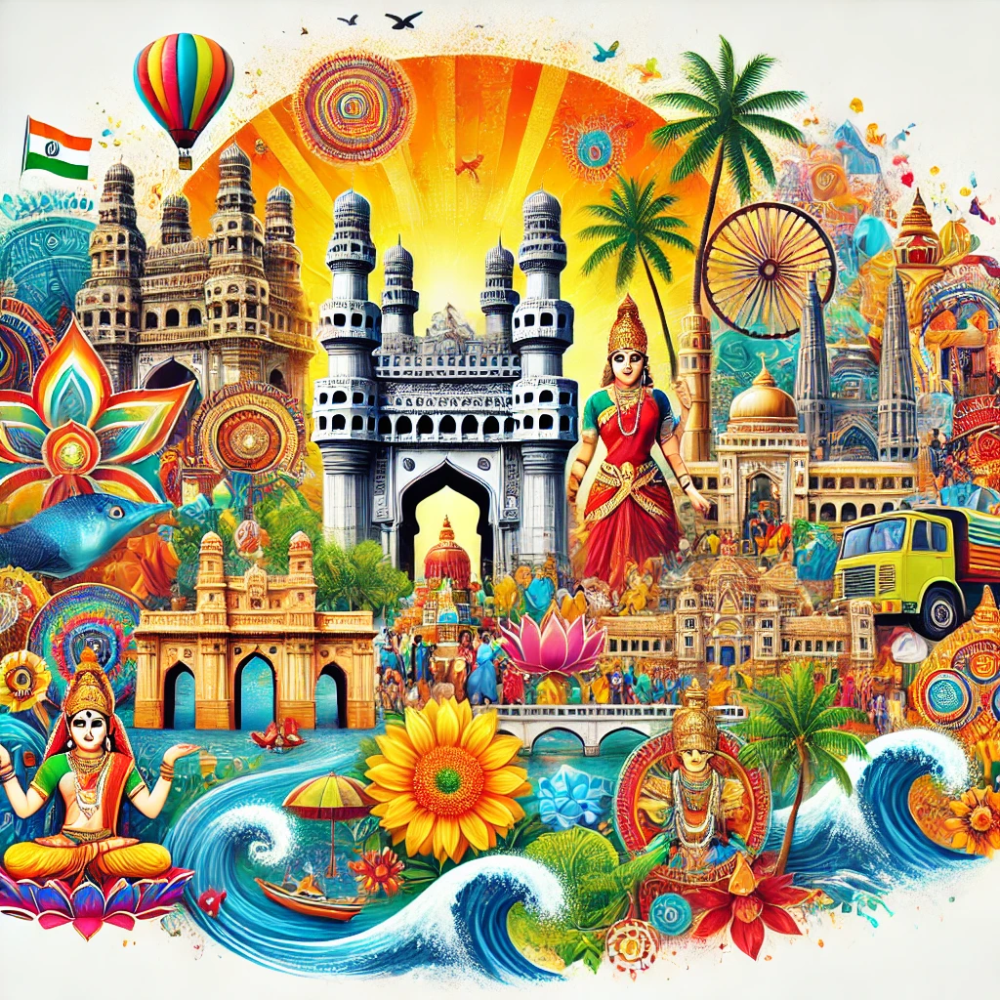

ANDRA PRADESH
Andhra Pradesh, a state in southeastern India, has a rich and diverse history dating back to ancient times. It was part of the Maurya and Satavahana empires, with the latter playing a crucial role in the spread of Buddhism. During the medieval period, it was ruled by powerful dynasties such as the Chalukyas, Kakatiyas, and Vijayanagara Empire, which contributed to the region's cultural and architectural heritage. The Qutb Shahi and later the Asaf Jahi (Nizam) dynasties controlled parts of the region before British rule. After India's independence in 1947, Andhra Pradesh was formed in 1953 as the first state based on linguistic reorganization, with Telugu as the primary language. In 1956, the Telangana region was merged with Andhra Pradesh. However, in 2014, Telangana was carved out as a separate state, making Hyderabad its capital, while Andhra Pradesh designated Amaravati as its new capital. Today, Andhra Pradesh remains an important state known for its historical sites, agriculture, and rapidly growing economy.
Best time to visit Andhra Pradesh
Best time to visit Andhra Pradesh is during the winter season, i.e. between November and February when the weather is pleasant and comfortable for the tourists to visit all the tourist attractions. Andhra Pradesh is least recommended during summer as the temperature can hit a maximum of 45°C, making it an incredibly inconvenient option to travel to the state. Heavy rainfall and high humidity levels are experienced during the monsoons which may not be what most tourists are looking for.